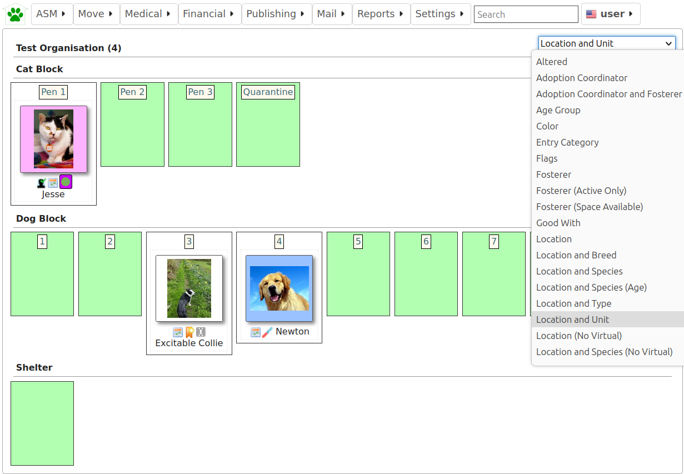

Animals¶
Shelter View¶
The shelter view screen (available from the default quicklinks or under ASM ‣ Shelter View) gives you an overview of all the animals currently on your shelter, broken down by their internal location. You can use this screen to jump straight to an animal’s record. You can also drag and drop animals to move them between locations quickly. If you have assigned units to the animal (for cage/pen numbers, etc) they will appear next to their name. A dropdown in the upper right corner allows different groupings to be applied.
Find Animal¶
ASM has multiple methods of finding animals. The default is the simple screen:

From the single search term, this screen searches all aspects of the animal, including codes, names, breeds, microchip numbers, original owner details, media and movements. Animals are shown irrespective of where they are (the location field displays where the animal is) or whether or not they are dead. When you use the system search box at the top with an a: filter, the simple animal search is what gets performed.
For example, searching for “black” would return animals with black in the name, animals that are black in colour, animals adopted to an owner with the surname black, etc. Results are sorted by relevance, so if the term appears in an animal’s name or code, it will be at the top of the list.
By clicking the Advanced button, you can go to a more sophisticated search screen that allows you to search by animal location and state, age, etc. You can change which find animal screen is shown by default under the Settings ‣ Options menu.

The Advanced screen allows you to enter detailed searches for groups of animals within your database.
If you press the search button without entering any criteria, you will get a list of all animals on the shelter. This is because the location box defaults to “On Shelter” - if you change this to “(all)” you will get all animals wherever they are.
Once you press the search button, ASM will search through your database and check each record against any criteria you have chosen, and return to you a list of all those that matched. For example, you could quite easily search for all animals of species “Dog” who are still on the shelter, located in a particular location and under 6 months old.
The criteria fields follow one of three types:
- Drop Down Boxes: You should select something from the list or the “(all)” entry to specify that you do not want to filter by this criteria.
- Text Boxes: The system expects you to type part of a word, name or code etc. For example, typing “ben” in the “Name” box on the find animal screen will return all animals who have “ben” somewhere in their name - eg: Ben, Benji, Benson etc. Some boxes require numbers - the “aged between” boxes require an animal age expressed as a year, or fraction of a year. Entering 0 in the “From Age” box and 0.5 in the “To Age” box will return animals who are six months old and younger.
- Filter: The filter dropdown allows selection of a number of options at the same time, such as only including animals that were transferred in from another organisation or housetrained.
Edit Animal¶
The animal screen is the one you will certainly use the most often within the system. Across the top, the animal screen has a banner with important information about the animal.
Below the banner, the animal screen is split into a number of different tabbed sections. Clicking these tabs makes that area of the animal active. Because not all of the information is mandatory or applicable to every animal, some of the tabs will show a graphic to highlight that they have information (the graphic varies according to what type of data is available on that particular tab).
Animal Details¶

The animal details tab contains all the basic information about the animal, including it’s breed, species, name, age, location within the shelter, identifying code etc.
A special option appears for “Non-Shelter Animal” (as shown in the screenshot). Tick this box if the animal is nothing to do with your shelter, but you want to utilise ASM’s facilities in managing vaccinations, etc. This is very useful for shelters that run their own clinics which are open to members of the public (and of course it allows clinics and vets to run their operations with ASM too if they don’t handle adoptions, etc).
You can also tick a “not for adoption” flag, which enables you to hide this animal from the internet publishers. Using the Hold and Quarantine flags will also hide the animal from publishing and add an emblem (a little icon) when you see the animal.
If the “Use Single Breed Field” option is not enabled in the system options (the default), then ASM will display two breed fields with a “Crossbreed” flag you can set. This allows you to choose two breeds for mixed/crossbreed animals. The details page is subdivided into a number of accordion panels to categorise the details. If you have created additional fields for animals under Settings ‣ Additional Fields then the “Additional” panel will appear.

Details are treated like a document and when viewing, you get a personal copy. Any changes you make aren’t effective until you hit the Save button on the toolbar. If you try to leave the details screen without saving changes, you will be prompted.
Entry¶

The Entry panel contains all the information about how the animal originally entered the shelter, including their background history and the names of the original owner and person who brought the animal in.
When adopting animals out, the system uses this information to track owners who have brought animals into the shelter previously and to warn staff before adopting animals to them.
The bonded with fields allow you to specify upto two animals that this animal can be bonded to. Bonding checks that when the animal is adopted, it is adopted with its bonded partner(s).
Most importantly, the right hand side of the screen contains the animals original date of entry to the shelter. This date is used when generating animal figures and auditing reports.
If you are using a US locale, you will also see Asilomar categories. These allow ASM to generate Asilomar figures for your shelter. Asilomar statistics are a standardised way of calculating euthanasia figures for animal shelters across the US. More information on them can be found here: http://www.asilomaraccords.org/
Health and Identification¶

The health and identification tab is used for entering general information about the animal’s health and veterinary care. The special needs box can be used to indicate that the animal has an ongoing or permanent health problem. Ticking this box will flag this when publishing to the internet and to services like PetFinder.
Death¶

The death tab is used for capturing information about the animal’s death if it is deceased. The most important field is the deceased date, as a value in this field is used by the system to indicate that the animal is dead.
In addition, an icon will be shown at the side of the death tab if the animal is dead. The animal’s location will also appear as Deceased with the reason if set.
A special field “Died Off Shelter” can be set if you know a particular animal that is located off the shelter has died. This ensures that the animal’s death is not included in figures reports, but still shows the animal as dead everywhere.
Diet¶

The diet tab is used for capturing information about the animal’s diet. You can set up as many different diet types (under Settings ‣ Lookup Data ‣ Diets) as you like, and then log them here when the animal’s diet changes.
Costs¶

The costs tab allows you to track costs associated with looking after an animal whilst it is in your care. You can assign a daily boarding cost, and ASM will automatically keep track of how many days the animal has been on your shelter and how much it has cost.
In addition, you can add cost types through the Settings ‣ Lookup Data ‣ Cost Types menu and allocate costs for anything else your shelter has spent on the animal (eg: Microchipping). Vaccinations and medical treatments have a cost field that you can set for each treatment and they will be automatically totalled up at the bottom of the costs screen along with a current running cost for all time and a balance, calculated from total costs less any donations allocated to the animal.
By default, when the animal is adopted, ASM will automatically convert the current boarding cost/time into a separate cost record so it can be preserved.
Vaccination¶

The vaccination tab is used to track information about any vaccinations an animal requires. An animal can have an unlimited number of vaccination records. For complicated, multi-diary procedures, see Diary Tasks, covered later on.
Use the toolbar to create and modify items in the list. Note that items in the vaccination list are saved immediately to the database when you hit the Save button in the popup screen. You will be reminded of outstanding vaccinations via the Vaccination Diary report, or by viewing them under Medical ‣ Vaccination Book
Vaccinations can also have a cost attached for use with reporting. The cost is for the individual vaccination.
Test¶

The test tab is used to track information about any medical tests an animal requires. An animal can have an unlimited number of test records.
Items in the test list are saved immediately to the database when you hit the Save button in the popup screen. You will be reminded of tests falling due via the Test Diary report, main screen alerts, or by viewing them under Medical ‣ Test Book
Tests can also have a cost attached for use with reporting.
Medical¶

The medical tab is used to track information about medical treatments an animal is receiving. It is extremely flexible in what it can track and it can handle just about any kind of schedule. You can create medical profiles from Medical ‣ Medical Profiles and use these as templates for treatment records.
Treatment records are automatically created from regimens. You can edit the regimen by click on the treatment name.
As you complete each treatment, ASM will generate the next record in the sequence, until there are none left and the medical record is automatically completed (unless the treatment has an unspecified end, in which case ASM will continue to keep creating treatments until the animal dies).
You can view all outstanding medical treatments at any one time by visiting Medical ‣ Medical Book, you can also print currently outstanding treatments from here.
Medical records can also have a cost associated with them for reporting. The cost is for the whole medical item (ie. If it’s a course of tablets, then the cost should reflect the whole cost of all tablets required for the medical, it is not per individual tablet).
Media¶

The media tab contains documents, images, PDF files and links that have been stored with the animal.
The most common use is for images. Click the attach file button to attach a new file to the animal. When you attach files, they are stored with the animal and you no longer need the original file. Since images are the most common use, the file browser will display previews of images, and if you click an image in the media list, it will be viewed full screen.
The web publisher will use the notes attached to the default image as the animal’s description when building a site or sending data to PetFinder or other third parties.
If the content is a PDF, you can click it to have your browser view it (if it has an appropriate plugin). If the content is an HTML document, then clicking it will open it with ASM’s built in word processor for editing and printing.
You can also attach document and video links (for example, to Google Docs or YouTube videos). Video links and images can have a default set for publishing purposes. If you have the “publish all images” turned on in your publishing options and an animal has multiple images, you can individually choose which ones will be published with the tick/cross icon next to the image icon.
Ticking the “Not for adoption” box on the details tab will ensure that the animal is not included in website publishing.
Notice that when an animal has media, the tab displays a graphic, indicating there is data under this tab.
Diary¶

The diary tab shows a list of all diary notes relating to this particular animal. From here you can create new diary notes, as well as modify existing ones.
Transport¶

The transport tab shows a history of where the current animal has been transported to (particularly useful for rescues who have volunteer drivers taking animals to vets from foster homes). Transport can be scheduled and reports exist to find new transports without a driver, etc.
Movements¶

The movement tab shows a summary of all movements that the animal has undergone. An animal can have an unlimited amount of movements and the movement tab has its own special toolbar. From here, you can create new movements and jump straight to the owner records for existing movements.
Log¶

The log tab is used for logging additional useful information. You can create as many log types as you want under Settings ‣ Lookup Data ‣ Log Types. You can then create a log entry with a given type for a date and with a comment. This is useful for keeping track of animal weights, bite reports, owner emails, complaints and anything else you can think of.
Moving and Reserving Animals¶
A large part of the administrative duties you will need to perform with Animal Shelter Manager revolve around the movement and reservation of animals.
To start with, it is best to explain how the movement system works; each movement record represents a leaving and returning transaction. You can therefore only have one (or no) active movement record at a time. ie. No more than one unreturned movement. This is because the animal cannot leave the shelter in two different ways without being returned first.
A special exception to this is reservations - since they are not actually a movement (the animal hasn’t gone anywhere), you can have one or more reservations as well as an open movement. You should turn the reservation into an adoption movement when the animal is adopted by the person with the reserve and cancel any other outstanding reservations. If it detects multiple reservations, ASM will prompt and cancel the other reservations for you when you turn one into an adoption.
Note: ASM calls reservations what some shelters call “adoption applications”. You can have as many open applications on an animal as you like with an appropriate status, but only one will ever become the animal’s adoption.
Any method by which an animal leaves your shelter requires a movement record. The only exception is death, which is handled through the animal death tab.

To make this process easier, you can use the Move menu to quickly create movements for animals. These actions will automatically validate the animal and person to make sure the movement is appropriate, and if the animal is already fostered it will be returned first, etc.
Retailer Movements¶
ASM has a special kind of movement called a “retailer” movement. This movement should be used if your shelter sells animals through retailers (pet shops, etc.).
To use this, you need to create at least one person on the system with the “Retailer” flag set. When an animal goes to a retailer, you create a retailer movement, moving the animal to the retailer (you can use Move ‣ Out ‣ Move an animal to a retailer).
Animals at retailers are still classed as on the shelter for reporting purposes, however you may then use the additional retailer reports to generate information about retailers (inventories, volumes moved, average time, etc)
When an owner adopts the animal and the paperwork is received by the shelter, you should return the animal from the retailer movement, create the real owner record and adopt the animal to it. If you use Move ‣ Out ‣ Adopt an animal and the animal is at a retailer, ASM will take care of this for you.
Movement records also hold a “from retailer” field, which allows you to identify a successful adoption to an owner through a particular retailer. As long as you use the Adopt an animal process, ASM will set this for you.
If you do not want to use retailer functionality, you can turn off the retailer feature under the Settings ‣ Options screen.
Trial Adoptions¶
If you have enabled the option under Settings ‣ Options ‣ Movement for “Our shelter does trial adoptions”, then when you adopt an animal, either from the movement screens or Move ‣ Out ‣ Adopt an animal then a checkbox will appear allowing you to flag that the adoption is a trial and when the trial ends.

Animals who are on a trial adoption will appear under Move ‣ Books ‣ Trial adoption book

When the trial ends, an alert will be shown on the home screen, which you can use as a reminder to contact the owner and either get the animal returned or make the adoption permanent. There are reports you can also install from the repository to view active or expired trial adoptions. You make an adoption permanent by simply unticking the trial box in the movement record.
Documents¶
Animal Shelter Manager has extensive document abilities for creating forms and letters. The system also includes its own web-based word processor for handling this.
To create a document for use with the system, you can manage templates under Settings ‣ Document Templates. You embed keys in your document that will be substituted with real data when a document is generated. For a complete list of document keys, see Appendix: Wordkeys
Keys follow the format <<[Keyname]>>. For example, putting the tag <<AnimalName>> in your document will cause it to be substituted for the animal’s name.

A number of places in the system have toolbars with generate document buttons, you can find these:
- On the animal details screen (creates documents with animal, person and movement information, useful for adoption paperwork)
- On the person screen(creates documents with person information)
- On the donations tab (creates documents with person, donation and animal information, useful for invoice and receipt templates)
However you choose to create the document, the process is the same. You select your document template from the dropdown list.

Once you have selected the template, the document will be generated and opened in the word processor, ready for editing and printing. If you hit the save button in the word processor, the document wi ll be saved to the appropriate media tab of the animal/person you generated the document for.
You can also use the PDF button on the toolbar to generate and open a PDF of the document. This is useful as PDFs will be consistent across different machines running different operating systems and with different fonts installed.

You can embed directives in your document to give some hints to the PDF engine. These should take the form of HTML comments, embedded in <!– and –>, and can be inserted by going to Tools->Source Code in the document editor:
<!-- pdf papersize a4 -->
To set the papersize to a4. Other options are a3, a5 and letter:
<!-- pdf orientation landscape -->
To set the orientation to landscape. Portrait is the default but can be explicitly set too.